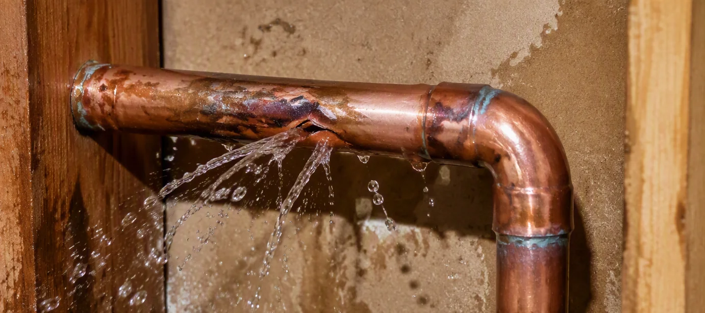
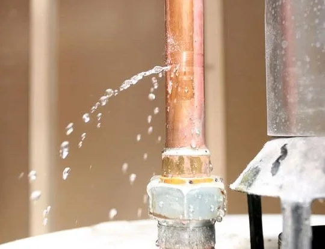
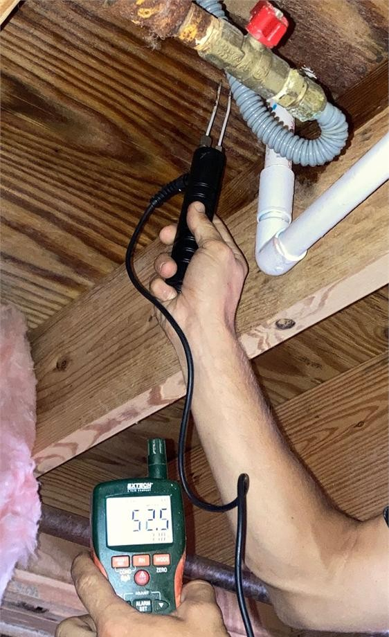
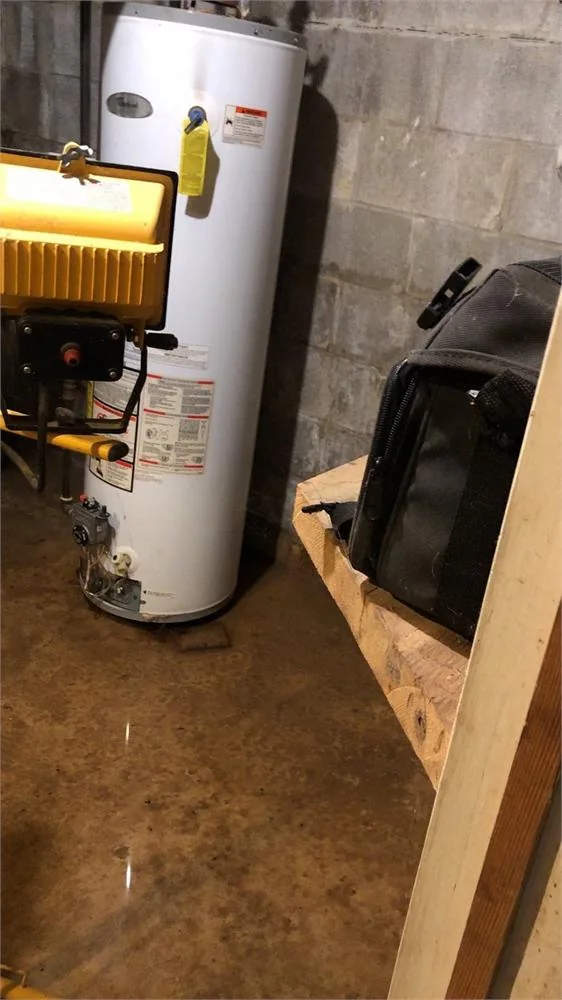
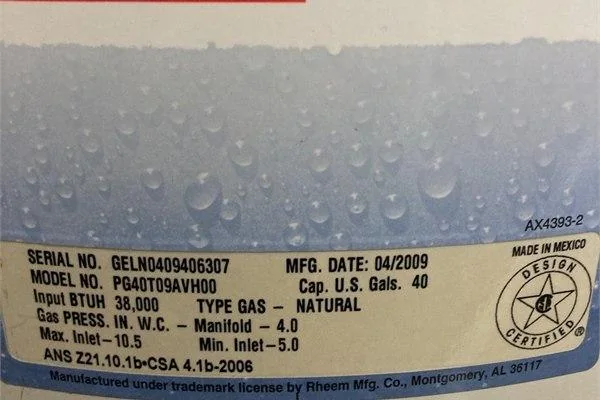
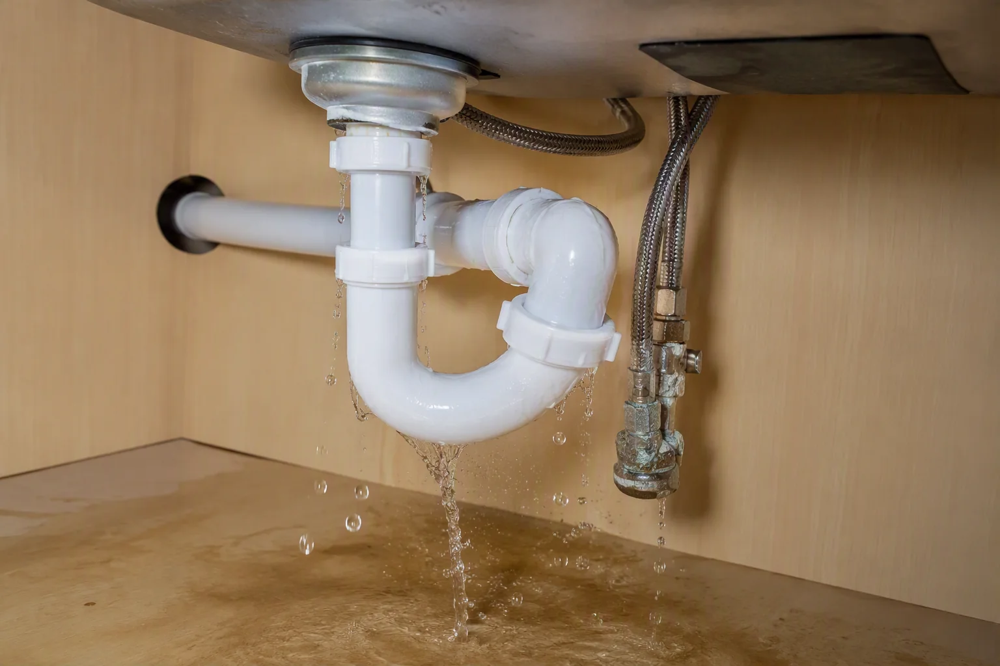
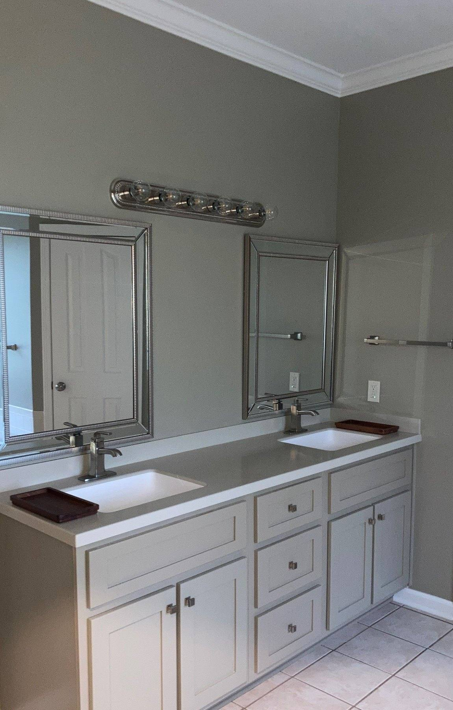
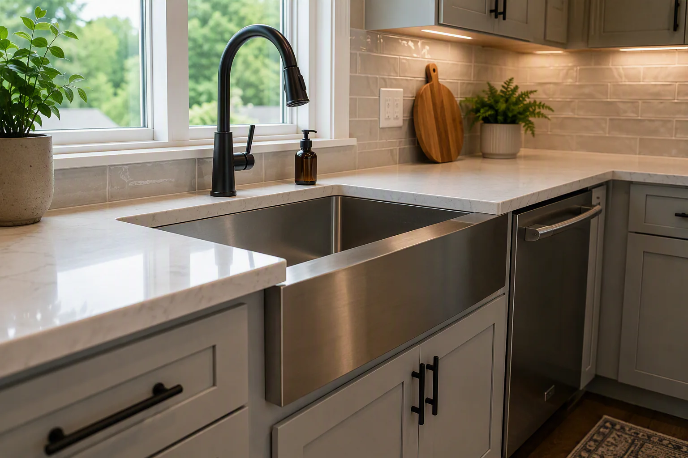

Emergency Response
Active water releases and property conditions requiring immediate protection.
Explore Emergency Response ServicesCrain Bros Inc provides plumbing leak repairs and restoration throughout Northeast Arkansas, including Jonesboro, Paragould, Brookland, Bono, Trumann, Harrisburg, Walnut Ridge, Lake City, Bay, Caraway, Monette, Newport, Blytheville, and Gosnell. We fix broken plumbing systems and restore homes and commercial properties damaged by water.

Crain Bros Inc repairs plumbing systems in homes and commercial properties throughout Northeast Arkansas. Some projects begin with a pipe that has split and is releasing water. Others begin with a fixture that will not drain, a water heater that is leaking, or moisture appearing where plumbing is concealed. We locate the problem, open the area when access is required, make the plumbing repair, test the system, and restore the part of the building affected by the work.
Crain Bros Inc also installs plumbing for new spaces and property improvements. During a remodel or addition, we plan the route of the piping around the new layout and the fixtures the owner intends to use. That planning helps the plumbing work fit the framing and finished room instead of forcing later changes after walls, cabinets, or flooring are installed.
Crain Bros Inc responds to active plumbing leaks and the resulting property damage in Jonesboro and throughout Northeast Arkansas. The first priority is to stop the source and prevent additional water from entering the property. We then determine how far the water traveled so the repair includes the rooms and materials that were affected.
A broken line can send water through a wall and into the floor below. Water can also move behind cabinets or collect inside insulation. Our emergency response services support immediate stabilization. Our water damage restoration services continue the work through moisture inspection, water removal, structural drying, cleaning, repairs, and reconstruction.


Crain Bros Inc repairs plumbing systems after a pipe bursts or a water line freezes. We expose the damaged section and stop the release. The failed piping or connection is replaced, and the repaired line is tested before the opening is closed.
A dependable repair also addresses the condition that contributed to the failure when that condition falls within the approved scope. A frozen line may need better protection from outdoor temperatures. A pipe that moved may need improved support. A damaged fitting may require correction of the connection instead of another temporary patch.
Crain Bros Inc investigates water-heater leaks by tracing the water back to the equipment or the plumbing connected to it. A failed tank may require replacement of the water heater. A leaking connector or valve may require a focused plumbing repair.
When standing water spreads beyond the equipment area, the project includes the surrounding property. We evaluate the floor and the materials beneath it. We also inspect nearby walls when the water reached the room perimeter. Our water-heater leak guide explains immediate steps property owners can take while arranging professional help.


Crain Bros Inc repairs leaks beneath kitchen and bathroom sinks. A failed supply connection can release pressurized water into the cabinet. A drain leak may appear only while the sink is being used and can continue until the cabinet begins to swell or the floor below becomes wet.
After the leaking connection is repaired, Crain Bros Inc checks the sink base and the materials below it. A wet cabinet may need to be dried or repaired through our cabinetry services. Water that reaches the wall may require controlled removal followed by drywall repairs and restoration services. When the leak reaches the finished floor or subfloor, our flooring repair services can complete that part of the project.

Crain Bros Inc repairs toilet leaks and investigates backups that affect Northeast Arkansas homes and commercial restrooms. Water around the fixture may come from the supply connection, tank, bowl, fixture seal, or a blocked drain. A toilet that runs between uses may also indicate water passing through worn internal parts.
The EPA WaterSense leak guidance describes meter checks, visual inspection, and dye testing as practical ways to identify household leaks. When a backup introduces wastewater into the building, the response must also address exposure control, cleaning, affected materials, and restoration.
Crain Bros Inc repairs drain-related plumbing problems when a clog or damaged sewer line prevents wastewater from leaving the property. We also repair water damage caused when a drain failure sends wastewater back into the building.
The investigation begins near the affected fixture and follows the drain toward the main discharge line. A clog close to the fixture can often be reached through an accessible drain opening. When several fixtures stop draining or the problem returns after the line has been cleared, the sewer pipe needs to be inspected farther downstream.
Inspection can reveal a damaged or collapsed sewer pipe beneath the property. Crain Bros Inc can excavate the area needed to expose the failed section. The damaged pipe is repaired or replaced before the trench is backfilled and the disturbed part of the property is restored.
A wastewater backup requires safe handling of the affected area. The CDC guidance for handling human waste and sewage explains worker hygiene and protective practices. Our project scope connects the sewer repair with cleaning and restoration of the property.
Crain Bros Inc repairs plumbing leaks connected to appliances and other water-using equipment. A dishwasher can leak from its supply line or from the drain connection that carries used water away. A washing machine can release water when a hose fails or when the standpipe cannot accept the discharge.
Refrigerator water lines often run behind the appliance and beneath nearby cabinets. A slow leak in that location can damage the wall or floor before the water becomes visible. We move the equipment as needed to reach the connection and determine where the water traveled.
After the plumbing is repaired, the affected area is dried and restored. When water reaches the floor beneath an appliance, our flooring repair services can address the finished floor and the subfloor below it.
Crain Bros Inc offers leak detection for properties where the plumbing leak is hidden or the source cannot be found through a visual inspection. We use the location and timing of the damage to narrow the search before unnecessary areas are opened.
A ceiling stain can point toward plumbing in the room or attic above it. Flooring that begins to swell can indicate water entering from below or from a nearby wall. A water meter that continues moving while fixtures are off can point toward a supply-side leak.
Our Leak Detection Services follow the plumbing route most closely connected to the observed condition. When access is required, the opening is planned around the likely source and the building materials that will need to be restored afterward.
Crain Bros Inc repairs and replaces plumbing system components when they have reached the end of their useful life. The work can focus on one failed section or expand into repiping when deterioration affects a larger part of the system.
Repiping creates a new route for water through the building and reduces dependence on piping that has begun to fail. New shutoffs can make future service easier by allowing one part of the system to be isolated without shutting down every fixture in the property.
Drain and vent piping is planned around gravity flow and the location of the fixtures it serves. The route must also account for structural framing and future service access. During additions and altered layouts, new piping is connected to the existing system without creating conflicts inside walls or floors.
Crain Bros Inc restores homes and commercial properties after broken or failed plumbing systems cause water to damage the property. The work begins by stopping the source and preventing additional damage.
Our emergency response services help stabilize the property. Our water damage restoration services address the water already inside the building. Water removal and extraction clear standing water from the affected area. Moisture inspection identifies materials that still hold water, and structural drying continues until the area is ready for repair.
When personal property has been affected, our personal property and contents care services support careful handling within the approved scope. Belongings can be inventoried before pack-out and storage. Cleaning or recovery work can then be planned around the condition of the affected items.
After the property is dry, Crain Bros Inc repairs the building systems and materials damaged by water. Reconstruction restores the home or commercial property around the repaired plumbing system. Our drywall repairs and restoration services can close plumbing access areas and restore damaged walls or ceilings. Flooring and cabinetry are repaired according to the water path and documented condition of the property.
Crain Bros Inc installs and relocates plumbing when an existing property is remodeled or expanded. The plumbing plan begins with the way the completed space needs to work. We determine where water must be delivered and where wastewater must leave before walls and floors are closed.
Our remodeling services bring plumbing decisions into the larger room plan. In a bathroom, the rough plumbing has to support the selected shower or vanity location. In a kitchen, the sink and dishwasher connections have to fit the cabinet layout and countertop openings. A laundry relocation requires a new supply and drain route that works with the structure of the building.
When a project adds new floor area or changes the use of a commercial space, our general contracting services coordinate the plumbing work with the construction sequence and required inspections. That coordination keeps concealed plumbing aligned with the framing and equipment that follow. It also prevents finished materials from being installed before the plumbing has been tested.
Crain Bros Inc installs the plumbing that allows a finished room to work as intended. In a bathroom, that includes connecting the vanity and setting the fixtures around the approved layout. Shower plumbing is placed before waterproofing and tile conceal the valve and drain connections.
Our custom bathroom remodeling services connect plumbing with construction of the complete room. The plumbing rough-in supports the selected fixtures, while the surrounding waterproofing and finish work protect the building and complete the design.
In a kitchen, the plumbing plan supports the sink and the equipment that uses water. Our custom kitchen remodeling services coordinate those connections with the cabinets and countertop. The result is a kitchen where the plumbing can be serviced and the finished parts fit together correctly.



When plumbing is concealed behind a wall, Crain Bros Inc removes only the drywall needed to reach the system. After the plumbing is repaired and tested, our drywall repairs and restoration services close the opening and reconnect the repaired area to the surrounding wall or ceiling.
Other access points are restored according to the material that was opened. Framing or insulation may need to be replaced before the wall is closed. Electrical components affected by water are handled through our electrical services. Damaged floors are completed through our flooring repair services. Affected cabinets are addressed through our cabinetry services.
When plumbing access requires cutting concrete or masonry, the work plan follows applicable controls in OSHA's construction silica standard.
Crain Bros Inc documents visible plumbing failures, water paths, moisture conditions, affected materials, access work, repairs, drying, cleaning, and restoration included within the project scope. This creates a clearer record of what happened, what was found, and what work was performed.
Crain Bros Inc works on properties involved in insurance claims and provides project documentation so property owners can handle their own claims. The contractor remains focused on the property condition, repair, and restoration work.
Property owners can use the EPA WaterSense household leak resource to review common toilet, faucet, showerhead, valve, meter, and flow-monitoring considerations. The Building America Solution Center guidance for water-using fixtures covers installation and leak-checking considerations for plumbing fixtures, equipment, and appliance connections.
The CDC sewage-handling safety resource explains hygiene and protective practices for work involving human waste. The OSHA respirable crystalline silica standard for construction applies when plumbing access work creates covered occupational exposure to silica-containing dust.
Active water releases and property conditions requiring immediate protection.
Explore Emergency Response ServicesInvestigation of concealed, intermittent, or uncertain moisture sources.
Explore Leak Detection ServicesWater removal, drying, cleaning, verification, repair, and reconstruction.
Explore Water Damage Restoration ServicesPlumbing coordinated with residential and commercial improvements.
Explore Remodeling ServicesVanities, showers, tubs, toilets, fixtures, waterproofing, and finishes.
Explore Custom Bathroom Remodeling ServicesSinks, faucets, dishwashers, appliances, cabinetry, countertops, and finishes.
Explore Custom Kitchen Remodeling ServicesPlumbing integrated with additions, alterations, reconstruction, and building work.
Explore General Contracting ServicesCrain Bros Inc repairs the failed plumbing and can continue through water removal, drying, damaged-material removal, reconstruction, and finish restoration under the approved project scope.
Crain Bros Inc recommends keeping people away from electrical hazards and unstable materials. If the correct shutoff is safely accessible, control the water source and call for emergency plumbing and property-damage response.
Crain Bros Inc investigates hidden leaks by following plumbing routes, fixture use, moisture patterns, visible damage, and the building assemblies that may contain the source or received water.
Crain Bros Inc repairs leaking water-heater piping and components, then evaluates the floor, wall, cabinet, framing, insulation, and other materials reached by water.
Crain Bros Inc relocates water lines, drains, vents, fixtures, and appliance connections as part of remodeling, additions, and altered room layouts.
Crain Bros Inc develops repiping and replacement scopes around the property, system condition, access requirements, shutoff planning, and the building materials that must be restored.
Crain Bros Inc provides commercial plumbing repairs, fixture installation, alterations, additions, occupied-space improvements, and restoration after plumbing-related property damage across Northeast Arkansas.
Learn what plumbing leak warning signs to watch for and why locating and correcting the source early matters.
Read Property Owners Maintenance Plan Part 1: Stopping Leaks Before They Damage Your HomeLearn how to document plumbing drips, supply and drain conditions, damp materials, stains, odors, and moisture appearing in hidden areas.
Read Property Owners Maintenance Plan Part 4: Attics, Crawlspaces, Drainage & MoistureStop the water safely, document what happened, understand the affected areas, and stay in control of the work and cost.
Read What Should I Do After a Water Heater Leak?Use the stain location, timing, nearby rooms, weather, plumbing, and HVAC operation to guide the search before repairing the ceiling.
Read Why Is There a Water Stain on My Ceiling?Water in a crawlspace may involve rainwater, drainage, groundwater, plumbing, HVAC condensate, or condensation. This property-owner guide explains what to document before the space is covered or repaired.
Read Why Is There Water in My Crawlspace?